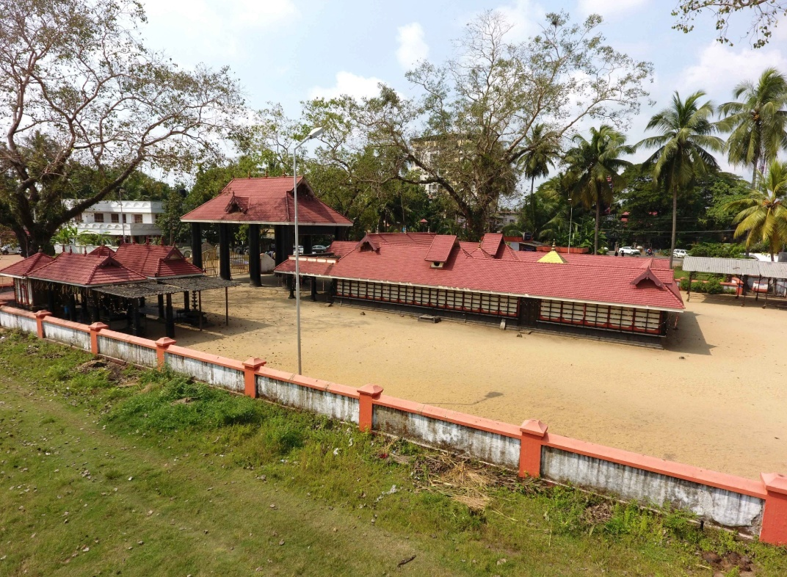

ABOUT OUR TEMPLE
Faith, tradition and service

Sri Marattil Kottaram Bhagavathy Temple is a historic shrine in Maradu, Ernakulam, renowned as the former summer house of the Cochin Royals. Dedicated to Goddess Bhagavathy (Bhadrakali), the west-facing deity is deeply revered by devotees.
The temple is known for its grand annual Thalapoli festival and spectacular pyrotechnic displays. It is located near Kundannoor and is managed by a trust led by Nair family members from Maradu, Kundannoor and Poonithura.
Presiding Deity: Bhagavathy (Bhadrakali)
Sub-Deities: Shasthavu, Nagaraja, Gandakarna, Ganesha and Bramharakshas.
MAJOR FESTIVALS & EVENTS
Thalapoli, firework traditions and ritual arts
Thalapoli / Maradu Fireworks Festival: Held annually during the February–March period, the festival is celebrated through the North Cheruvaram and South Cheruvaram committees, with separate rituals and grand fireworks exhibitions.
Mudiyettu: Traditional ritual art performances are also occasionally held at the temple grounds.